|
|
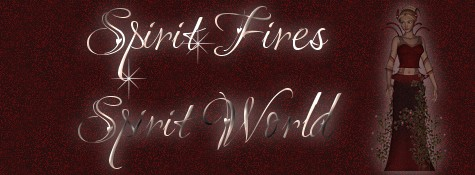
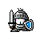
My "knight-in-shining armour",
here to protect my 'new' Spirit Wings!
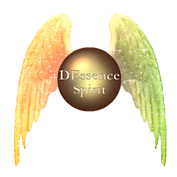
I know it was a l-o-n-g walk
up the path to D'Castle!
Just as a lighthouse's beacon shines
through the dark night;
our light beckons all weary travellers
to climb the
path and enter our mystical home!
Warm yourself
by my fire, pour yourself something hot.
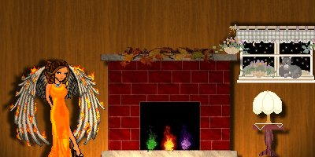
Sit back, relax and enjoy the music.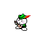
I am a Spirit for The Legends.
I am ~SpiritFire~.
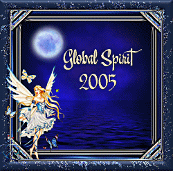
I bid thee, Welcome to DRealm.
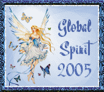
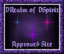
Look what I got today, Oct. 25, 2001!
WooHoo!! :) Thank you!
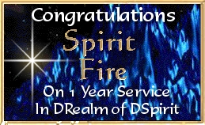
Woooooo!! Lookee! My 1-year anniversary!
You can see most of my monthly dusting awards and other
odds-n-ends, I'd collected as a Spirit in previous years!
My AWARDS
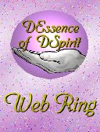 |
This DEssence Webring
site is owned by
Spirit Fire.
Click here for info on
how to join the
DEssence
Webring. |
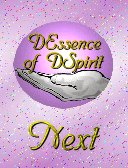 |
| [Previous] [Random] [Next
Site] [Skip
Next] [Next
5] [Index]
"DEssence of DSpirit, I help spread the
spirit!" |
This
Legendary Spirit Site
belongs to Spirit
Fire.
* Previous * Next *
* Skip Previous * Skip Next *
* Random * List * Join *
|
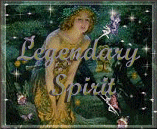 |
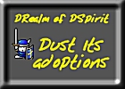
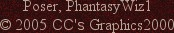
Background, banners and buttons created by Donna [aka Spirit
Fire]
| |